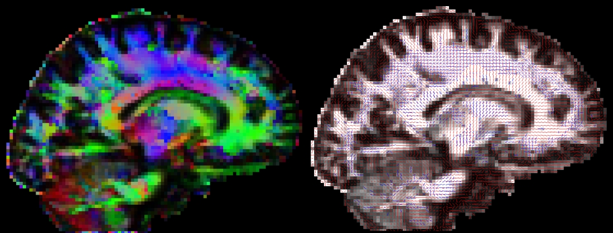

Displaying DWI images in fslview
Outputs of bedpostx or dtifit can be conveniently displayed in fslview.
If you open an image of diffusion vectors (e.g., dtifit_V1 output of dtifit or dyads<i> output of bedpostx) then it is
possible to display these vectors using RGB coding (where the colours red,green and blue represent diffusion in the x,y,z axes respectively) or
using lines where a line at each voxel represents the principle
diffusion direction at that voxel.
It is also possible to display multiple lines per voxel. Each line will be displayed in a different colour. In the example above, the red lines represent the main fibre orientation, and the blue lines represent the secondary fibre orientations (thresholded at an f-value of 0.05), as calculated by bedpostx.
If you only want to visualise fibres within voxels where multiple fibres are supported (e.g. above a certain threshold for the corresponding mean_f<i>samples), then you first have to create a vector file where the voxels below a certain f-threshold are zeroed. You may use the two following commands for that:
fslmaths mean_f<i>samples -thr 0.05 -bin tmpmask
fslmaths dyads<i> -mas tmpmask dyads<i>_masked
For more details see the relevant fslview
tutorial.